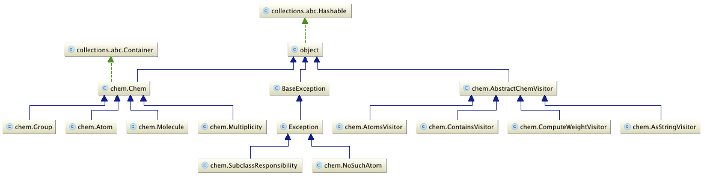

Assignment 1 (Due Thursday, November 7th at 13:00)
Table of Contents
1 Parsing Molecules
1.1 Goals
The goals of this assignment are:
- To get you to learn Python quickly
- To get you to think about grammars
- To get you familiar with parsing combinators
1.2 Description
In this problem, you will implement a parser for the chemical notation of molecules. You need to be able to take in a string, representing a molecule in standard ASCII notation, and return an Object that represents this molecule. Your object should be able to respond to the questions about the atoms in the molecule, as well as its molecular weight, and it should have a printed string representation.
Your base class is Chem. The entry point for the parser is the static method Chem.readMoleculeFromString. This method takes a string and returns a molecule, and any remaining characters left after reading the molecule. You can create static methods in a class by preceeding the method definition with @staticmethod.
Below is a sample interaction with Python, via the IDLE IDE. Remember that multi-line strings in Python are enclosed between triple double-quote marks:
>>> mol, remaining = Chem.readMoleculeFromString("""
{ Comments are in braces -- {they can be nested!}
}
CO2
""")
>>> remaining
''
>>> mol
<__main__.Molecule object at 0x10378d240>
>>> str(mol)
'CO2'
>>> mol.atoms()
{<__main__.Atom object at 0x10378d390>, <__main__.Atom object at 0x10378d9e8>}
>>> mol.computeWeight()
44.0095
>>> Atom('C') in mol
True
>>> Atom('W') in mol
False
>>> Atom('Ir')
<__main__.Atom object at 0x101e19898>
>>> Atom('Iran')
Traceback (most recent call last):
File "<pyshell#17>", line 1, in <module>
Atom('Iran')
File "/Users/gmayer/work/lang/python/chem/chem.py", line 264, in __init__
raise NoSuchAtom(symbol)
NoSuchAtom: Iran
>>> atom = Atom('Ir')
>>> str(atom)
'Ir'
>>> atom.number
77
>>> atom.name
'Iridium'
>>> atom.weight
192.217
You can see that our parser can handle (and ignore) both whitespace and comments. Whitespaces are any blank characters (chars of ASCII 32 or less), and comments is any text that appears between beaces: {...}. Comments can be nested. Handling nested comments is important, because when debugging your parser, you may very well want to comment out parts of a molecule, and those in turn may have other parts commented out. For example:
>>> mol, remaining = Chem.readMoleculeFromString('H2SO4')
>>> str(mol)
'H2SO4'
>>> mol.computeWeight()
98.07848
>>> mol, remaining = Chem.readMoleculeFromString('H2SO{4} {not a real molecule}')
>>> str(mol)
'H2SO'
>>> mol.computeWeight()
50.08028
>>> mol, remaining = Chem.readMoleculeFromString('H2S{O{4}} {H2S stinks like hell!}')
>>> str(mol)
'H2S'
>>> mol.computeWeight()
34.08088
>>> Atom('O') in mol
False
Please remember that in order to support a test for membership, you will need to define the method __contains__. To support the str( .. ) procedure, you will need to define the method __str__.
The only classes you are required to have are Chem and Atom. As long as you support all the functionality we ask for, in the interface we ask for, we do not care what additional classes and methods you choose to implement. Nevertheless, I recommend that you use consider my choice of classes:

As you can see, the classes Atom, Multiplicity, Group, and Molecule inherit from Chem. I also make extensive use of the visitor pattern, because it keeps common functionality together, and reduces the size of the main classes.
- An atom contains a symbol (e.g., 'Au', for gold), a name (e.g., 'Gold'), an atomic number, and an atomic weight. This information will be given to you in the form of a huge hash table
periodicTable, which you will include in your source file. - A group contains two things, either one of which may be an atom, a group, or a multiplicity. Examples of groups include: OH, ClO, etc.
- A multiplicity contains either an atom, a group, or a multiplicity, and an integer that denotes how many times this atom or group appears in the molecule. Examples of multiplicities include: O4, (SO4)3, etc.
- A molecule contains either an atom, a group or a multiplicity. It is intended to provide some abstraction and possibly some future functionality.
The parser must be written using the parsing combinators module pc.py. The file is available for download right under the assignment statement. Parsing combinators will be explained to you in your recitation sections.
1.3 What we will check
1.3.1 Exceptions
- We expect your code to perform full error checking on its input, and generate a
pc.NoMatchexception if it is unable to read a molecule from the given string.
>>> try:
m, s = Chem.readMoleculeFromString('(NH4)3PO4')
print(m)
except pc.NoMatch as e:
print('raises an exception')
(NH4)3PO4
>>> try:
m, s = Chem.readMoleculeFromString('[NH4)3PO4')
print(m)
except pc.NoMatch as e:
print('raises an exception')
raises an exception
- Your code should generate a
NoSuchAtomexception when the user attempts to create an atom that does not exist in the hash tableperiodicTableyou will be given. You should not modify this table!
1.3.2 Completeness
- Chemical formulas can be written with or without whitespaces between atoms, groups, and their multiplicities.
- Whitespaces may not appear between letters of the symbol of a single chemical element.
Feis fine, butF eis not. - An element symbol starts with an uppercase letter, and may be followed by zero or more lowercase letters.
- Your parser should be case-sensitive: For example, HF is hydrofluric acid, a molecule made up of hydrogen and fluorine, whereas Hf is the element Hafnium.
- Newly discovered elements tend to get 3 letters (at least at first). For example, Uuu is the original symbol for the 111-th element, currently named Roentgenium. There are other examples of 3-letter elements.
- Multiplicities are written as natural numbers. These do not start with the digit
0. They can be several digits long. - Groups can be surrounded by either parenthesis or brackets. These must match:
Fe4[Fe(CN)6]3is fine, but the following are not:Fe4[Fe(CN)6)3,Fe4[Fe(CN]6]3,Fe4(Fe(CN)6]3, etc. Consider the following example:
>>> mol, remaining = Chem.readMoleculeFromString('Fe4 [Fe (CN)6]3')
>>> mol
<__main__.Molecule object at 0x1037aa0b8>
>>> str(mol)
'Fe4(Fe(CN)6)3'
>>> remaining
''
>>> mol, remaining = Chem.readMoleculeFromString('Fe4 (Fe (CN)6]3')
>>> str(mol)
'Fe4'
>>> remaining
'(Fe (CN)6]3'
>>> mol, remaining = Chem.readMoleculeFromString(remaining)
Traceback (most recent call last):
File "/Users/gmayer/work/lang/python/lib/pc.py", line 45, in match
return self.pc1.match(s)
File "/Users/gmayer/work/lang/python/lib/pc.py", line 119, in match
raise NoMatch
pc.NoMatch
When an entire string does not match a molecule, it may sometimes be possible to read off part of that string. In the above example, the parenthesis don't match, so the entire string does not correspond to a molecule. However, it is possible to create "a molecule" (not that such a molecule could ever exist) by reading off the head of the string. If you examine the remaining characters it should become clear that "the molecule" is Fe4 (!).
- The string representation of a molecule should use the least number of parenthesis that is necessary to print a molecule. For example:
>>> mol, remaining = Chem.readMoleculeFromString('(H)2((O)2)')
>>> str(mol)
'H2O2'
>>> mol, remaining = Chem.readMoleculeFromString('((Al)2)((((S)O4)3))')
>>> str(mol)
'Al2(SO4)3'
The string representation should only use parenthesis
()in the output. Not brackets[].
- Comments are matching braces
{ ... }and anything in between, including other nested comments. The idea is that you can comment out whole molecules or parts of molecules, and these in turn may include other comments.
>>> mol, remaining = Chem.readMoleculeFromString('C27 {lala} H28 Br2 O5 {{lulu} is back in town!} S')
>>> str(mol)
'C27H28Br2O5S'
>>> remaining
''
>>> Atom('C') in mol
True
>>> Atom('H') in mol
True
>>> Atom('Br') in mol
True
>>> Atom('O') in mol
True
>>> Atom('S') in mol
True
>>> Atom('Lu') in mol
False
Please do not derogate such issues as whitespace, matching parentheses, and comments. This assignment is about parsing, and while in "real life" you may not take comments seriously, they actually provide a wonderful example of a small, but non-trivial sub-grammar for your parser.
1.4 What to submit
You should submit a zip file hw1.zip, that creates a directory hw1 containing:
- The file
chem.py. You should not inlcudepc.py, nor should you include its content inchem.py. - A file
readme.txtthat contains the names, IDs, and email addresses of all group members (you may either work alone, or with a single partner), as well as the following statement:
I(We), <fill in your name(s)>, declare the following to be true:
- We worked on this assignment alone. We did not consult with others about this assignment, other than the teaching staff for this course.
- We did not copy code either from other students or from the internet.
- We did not make available this code to other students taking this course.
- We are aware of the University, faculty (as specified in the שנתון), departmental, and course policies (as specified in the syllabus) on academic dishonesty: We realize that if we are found to have committed academic dishonesty that we shall be sent before the disciplinary committee (ועדת משמעת), fail the course, and possibly incur other penalties as decided by the disciplinary committee.
We will not grade any work submitted that does not include the above statement. Please do not forget to include it, with your names spelled out. If you do not do this, for any reason, then at the very least, you will incur the 5% per diem late penalty (as specified in the course syllabus).
1.5 Last minute instructions
- We will be using our own version of
pc.pyto test and debug your code, so please do not rely on changes you might make to that file. - PLEASE do make sure that your work runs on the departmental Linux machines. It will save you much grief later on!
- PLEASE do go over the submission instructions carefully, and make sure you did not leave out anything.